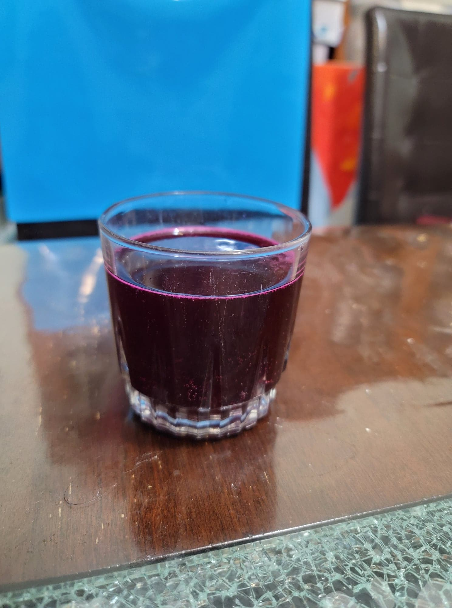

Beet Kvass

Ingredients:
- 3 large Beets, peeled and cut into 1 inch cubes
- 2 tbsp Sea salt OR 1 tbsp Sea salt + 1/4 cup Sauerkraut brine
- 4~ cups Water, nonchlorinated + more as needed
Instructions:
- Combine all the ingredients into a 1/2 gallon jar and stir to combine. Cover with a loose-fitted lid and place in a room-temperature dark location to ferment for at least 5-7 days.
- When it reaches a desired flavor, strain the kvass into 2 16 oz flip-top bottles. Let ferment for about 2-3 days more and then transfer to the fridge. Serve cold.